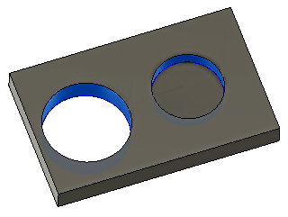

<div id="circular_circularfaces"><p>円柱形の穴、ポケット、またはボスを選択します。面の選択のみが許可されます。直径、始点の高さ、ボトムの深さはすべてこの選択で決まります。</p>
<table class="tipTable" cellspacing="10">
<tr>
<td><center></center></td>
</tr><tr>
<td><center><p><b>サークル ミルの面選択</b></p></center></td>
</tr></table>
</div>